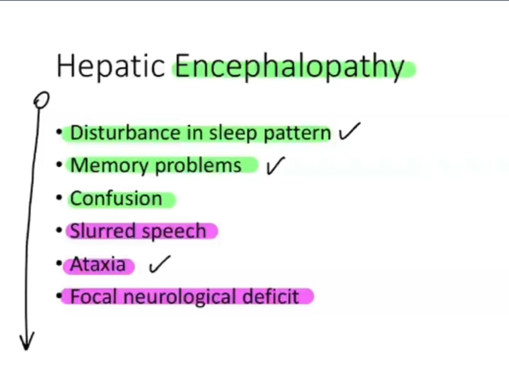
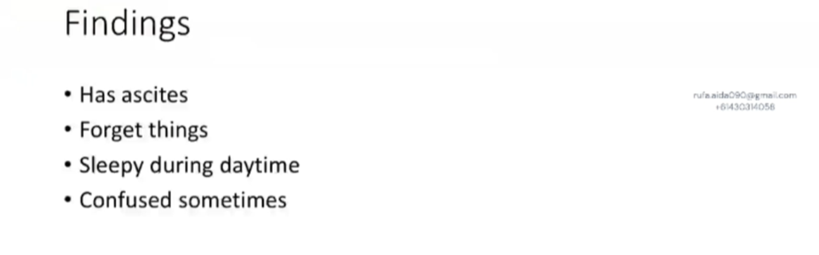
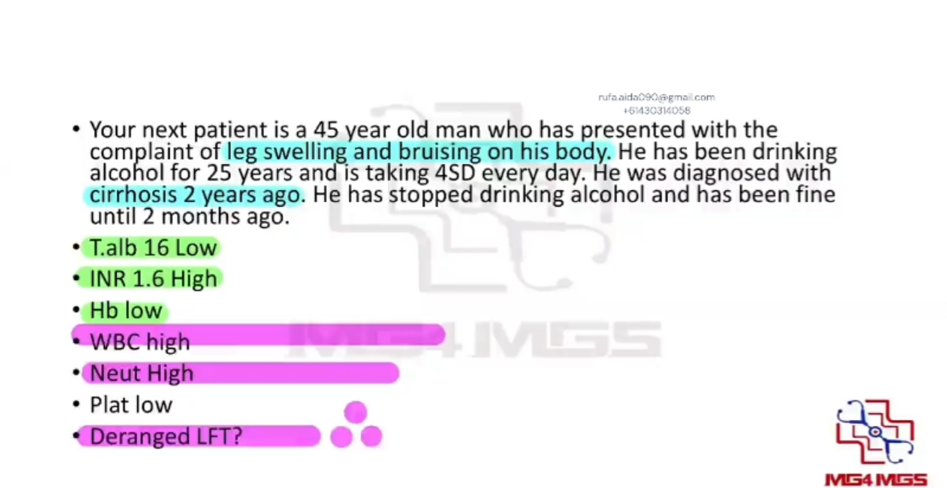

Chronic Liver Disease: Hepatic Encephalopathy and Spontaneous Bacterial Peritonitis
Source: Dr. Amir workshop — GIT 2026 / class 5 liver cases (Aug 2026 drop) · Specialty: gastroenterology
Background: Cirrhosis, Complications and Decompensation
Chronic liver disease (CLD)/cirrhosis produces non-specific symptoms including anorexia, weight loss, weakness, fatigue, muscle cramps and melaena/haematochezia.
Features of hepatic encephalopathy:
- Disturbance in sleep pattern (early sign)
- Memory problems and confusion
- Slurred speech
- Ataxia
- Focal neurological deficit (late)
Major complications of cirrhosis:
- Ascites
- Spontaneous bacterial peritonitis (SBP)
- Hepatic encephalopathy
- Hepatocellular carcinoma (HCC)
- Hepatorenal syndrome
- Hepatopulmonary syndrome
Precipitants of decompensation: constipation, infection (including SBP), gastrointestinal bleeding, alcohol, new medications, electrolyte disturbance.
Case 1 - Stem (Hepatic Encephalopathy, collateral history)
A 72-year-old woman was diagnosed with liver cirrhosis 2 years ago due to alcohol use; she reportedly stopped alcohol at that time. Her husband attends the GP because he has noticed memory and behaviour change in his wife. The patient refused to attend; the husband has authority to discuss her care.
Task: Take a focused history from the husband for 6 minutes. Discuss the likely diagnosis and differentials with reasons.
Given findings: has ascites; forgetful; sleepy during the daytime; sometimes confused.
Case 1 - Focused History Framework
Step 1 - Explore the complaint: clarify what the husband means (memory problems vs failure to recognise him vs strange behaviour). Establish timing (onset, constant vs intermittent, gradual worsening) and any alleviating/aggravating factors.
Step 2 - CLD history: duration since diagnosis, current treatment and compliance, regular GP/specialist follow-up.
Step 3 - Screen complications of decompensation:
- Symptoms: jaundice, itch, easy bruising (clotting factor deficiency), tiredness, muscle cramps, haematemesis/melaena (oesophageal varices or haemorrhoids), reduced libido
- Hepatic encephalopathy: memory, sleep disturbance, weakness/numbness, balance and vision
- SBP: abdominal pain, nausea/vomiting, fever/chills
- Malignancy: weight loss, appetite loss, lumps/bumps
- Hepatorenal: reduced urine output
- Hepatopulmonary: shortness of breath, cough
Step 4 - Precipitants of decompensation: ongoing alcohol (husband finds hidden beer cans), new medications, recent infection/flu-like illness, constipation.
Step 5 - Geriatric screen: falls, home support, diet, activities of daily living, mood (geriatric depression).
Case 1 - Diagnosis and Differentials
Most likely diagnosis: hepatic encephalopathy - a complication of cirrhosis and liver failure, where the liver cannot clear toxins that then affect the brain, producing behavioural change, memory problems and sleep disturbance. Likely precipitated by resumed alcohol intake.
Differentials (other cirrhosis complications): SBP with sepsis, hepatocellular carcinoma, hepatorenal and hepatopulmonary syndromes.
Differentials for delirium: sepsis, medications and medication/alcohol withdrawal, brain tumour, Alzheimer disease, Lewy body or other dementia, electrolyte imbalance, hypo-/hyperglycaemia.
Case 2 - Decompensated Cirrhosis and SBP (History)
Opening: patient reports bruising and swelling of the legs, a growing abdomen, and that she restarted alcohol (about five glasses of wine) roughly six months ago.
Explore the complaint:
- Leg swelling: timing, progression, gravity dependence (better lying down?), unilateral vs bilateral, extent
- Bruising: spontaneous vs trauma-related (easy bruising)
Then proceed through CLD history, complications screen, and decompensation precipitants as in Case 1.
Case 2 - Explaining Investigations and Diagnosis (SBP)
Explaining bloods in plain language:
- Albumin low - liver not producing protein
- Platelets low - reduced clotting
- INR high - liver not producing clotting factors, so blood clots slower
- Haemoglobin low
- WBC high with high neutrophils - suggests bacterial infection
- Liver enzymes raised - liver inflammation
Diagnosis: spontaneous bacterial peritonitis - infection of the ascitic fluid in a patient with cirrhosis.
Supporting reasons: fever; raised WBC/neutrophils; ascites on examination; recent alcohol (a precipitant for decompensation).
Case Figures







🔬 Expert Review & Enhancements
Reviewed by: history-taking-expert (Australian clinical supervisor) · fact-checked against the irStudy medical textbook RAG index.
✏️ Corrections
This should read 'oesophageal varices' (Australian spelling). Variceal haemorrhage is a key cause of GI bleeding and decompensation in cirrhosis and should be screened for explicitly.
Diagnosis of SBP requires a diagnostic ascitic tap (paracentesis): an ascitic fluid polymorphonuclear (neutrophil) count of at least 250 cells/mm3 is diagnostic. Per Therapeutic Guidelines, empirical treatment is an IV third-generation cephalosporin (e.g. ceftriaxone or cefotaxime), with IV albumin to reduce hepatorenal syndrome risk. This should be added to the teaching notes.
Management should include identifying and treating the precipitant (constipation, infection, GI bleed, electrolyte disturbance) and commencing lactulose titrated to 2-3 soft stools/day (rifaximin as add-on per gastroenterology). This is worth adding for completeness even though the station is history-focused.
⭐ Suggested Enhancements
🏷️ Metadata
📚 Reference Citations (RAG)
John Murtagh General Practice, 8th Edition.pdf p.1380 qdrant:481fb113-b6a2-429d-8cd2-c3bf0a249791
John Murtagh General Practice, 8th Edition.pdf p.1965 qdrant:579806d3-78f5-447c-8a5f-f27f7b84d1e2
John Murtagh General Practice, 8th Edition.pdf p.1350 qdrant:bc132ec0-6ecf-4d4e-86d4-f77d412c115f
John Murtagh General Practice, 8th Edition.pdf p.201 qdrant:cec95b6d-589e-4cf2-87b9-ef194fd45d2c